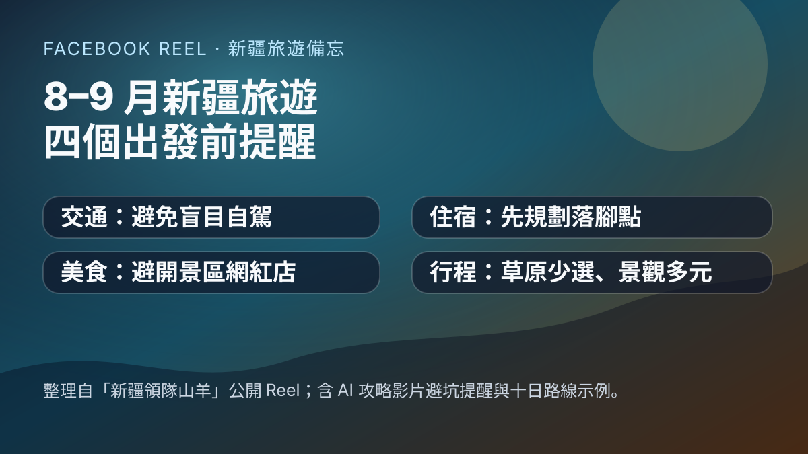

Facebook Reel｜新疆領隊山羊：8–9 月新疆旅遊四個出發前提醒

一句話摘要
Facebook Reel「新疆領隊山羊」提醒 8–9 月到新疆旅遊前，要留意交通、景區餐飲、住宿與路線安排：新疆距離遠、山路多且 9 月獨庫公路可能遇雪；景區網紅餐廳不一定划算；烏魯木齊、伊犁與景區住宿宜先規劃；8 月後草原景觀可能轉黃，建議用冰川、湖泊、沙漠、雅丹、草原等多元景觀組合行程。
來源脈絡
- 來源：Facebook Reel「新疆領隊山羊」公開短影音。
- 分享連結：https://www.facebook.com/share/v/19cHpFHfQS/?mibextid=wwXIfr
- Canonical：https://www.facebook.com/reel/1485098896717254
- 影片長度：約 248 秒。
- 頁面可見互動：Facebook 頁面顯示約 2,095 個心情、61 則留言、128 次分享；Open Graph 標題顯示約 8.5 萬次觀看。
- 影片主旨：作者認為網路上一些「非本人出鏡」的 AI 攻略影片內容容易拼貼失準，因此以導遊視角整理 8–9 月新疆旅遊的真實狀況、穿搭／天氣、注意事項與避坑點。
- 擷取方式：公開頁面 metadata、yt-dlp metadata、本機 Whisper base 中文 ASR 與影片影格 OCR；轉錄可能有地名同音誤差，本文已將明顯地名人工校正。
四個出發前提醒
### 1. 交通：不要盲目自駕到新疆
- 新疆位在中國西北，跨區距離長，許多路段是彎曲山路。
- 影片提醒 9 月獨庫公路常可能遇到下雪或路況變化，不建議沒有充分準備就自駕長途進疆。
- 推薦方式：搭飛機抵達烏魯木齊天山國際機場；若搭火車，選烏魯木齊站等離市區較近的站點，後續移動較方便。
### 2. 美食：避開景區網紅店，找本地小區餐館
- 作者提醒，不管到哪個旅遊目的地，景區裡熱門網紅餐廳可能價格偏高、味道未必理想。
- 若想吃地道美食，可優先找酒店附近、小區樓下、做本地人生意的飯館。
- 8–9 月也是新疆瓜果飄香的時間；影片提到可在小區附近水果攤買水果，例如葡萄、西瓜等。
### 3. 住宿：先決定住哪裡，最好提前訂
- 酒店與落腳點要提前規劃。
- 烏魯木齊可考慮住地鐵沿線，城市移動較方便。
- 伊犁可考慮六星街附近。
- 去景區玩，則可住旁邊鎮子或縣城，吃喝玩樂與補給較便利。
### 4. 行程：8 月後別排太多草原，改做多景觀組合
- 影片提醒 8 月後部分草原開始轉黃，不一定符合想像中的大片翠綠草原。
- 建議草原景區不要貪多，可選：
- 可看冰川的夏塔。
- 離獨庫公路較近的那拉提。
- 免費的唐布拉草原。
- 目標是把湖泊、草原、森林、雪山、冰川、沙漠、戈壁、雅丹地貌串成一條多元路線，而不是單押草原景觀。
影片提到的十日北疆／伊犁路線示例
- 第一天：烏魯木齊集合；早到可去新疆博物館。
- 第二天：穿越古爾班通古特沙漠；下午看北疆最大的烏倫古湖。
- 第三天：走阿禾公路前往禾木村；可租自行車在村子裡看日落、晚霞，晚上參加篝火晚會。
- 第四天：前往喀納斯，看喀納斯湖光山色與「湖怪」傳說。
- 第五天：前往世界魔鬼城，看雅丹地貌。
- 第六天：前往賽里木湖玩一天；可坐帆船、湖邊發呆、爬松樹頭；之後從南門出去拍果子溝大橋，晚上到伊寧六星街夜市吃美食。
- 第七天：走伊昭公路，沿途看草原、森林、牛羊與氈房；下午到夏塔景區拍木扎爾特冰川。
- 第八天：前往那拉提空中草原，看牛羊、小橋流水，在草原拍照。
- 第九天：遊玩唐布拉百里畫廊；再走獨庫公路翻越哈希勒根達坂，夏天仍可能體驗打雪仗、堆雪人。
- 第十天：逛國際大巴扎，再到紅山乾果市場買伴手禮。
AI 學習雷達備註
- 這支 Reel 的一個有趣切入點，是作者直接提醒「非本人出鏡的 AI 攻略影片」可能是拼貼內容、對實際旅行沒有幫助。對旅遊知識庫而言，這代表 AI 生成攻略應加入來源可信度、在地經驗、季節與路況驗證機制，而不是只重組熱門景點名單。
- 可作為之後設計「旅遊 AI 助理」的案例：路線建議必須同時檢查季節景觀、交通風險、住宿區位、餐飲踩雷點與地名正確性。
原文／逐字重點整理
> 8 月 10 號以後不要隨意來新疆；網上那些非本人出鏡的 AI 攻略影片不要只看，很多是拼湊內容。作者接著整理 8–9 月新疆旅遊的交通、美食、住宿與行程避坑點。
- 交通：新疆路程遠、山路多，9 月獨庫公路可能下雪；建議搭機到烏魯木齊天山國際機場，或搭火車到烏魯木齊較便利的站點。
- 美食：景區網紅餐廳不一定值得；想吃地道美食，找酒店附近小區樓下飯館；8–9 月可買當季瓜果。
- 住宿：烏魯木齊住地鐵沿線，伊犁住六星街附近；景區則住附近鎮子或縣城。
- 行程：8 月後不要選太多草原景區；可用夏塔、那拉提、唐布拉搭配喀納斯、禾木、世界魔鬼城、賽里木湖、獨庫公路等景觀。
保存狀態
- 狀態：已歸檔。
- 本地備份：metadata、ASR 轉錄與封面圖已保存於知識庫來源資料夾。
- 注意：本文不是旅行社推薦或官方交通公告；出發前仍需查詢最新天氣、道路開放、景區管制與航班／火車資訊。